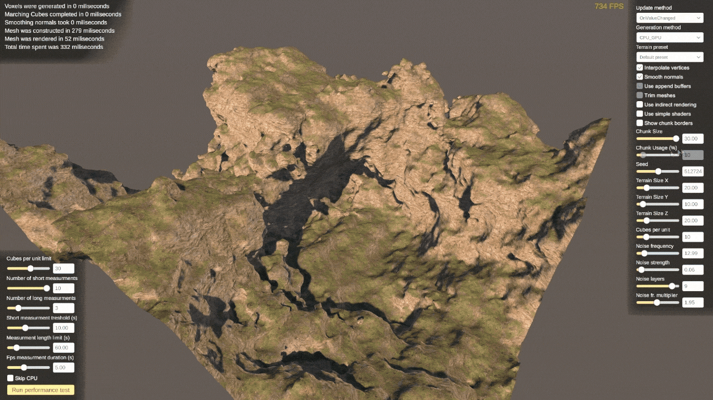
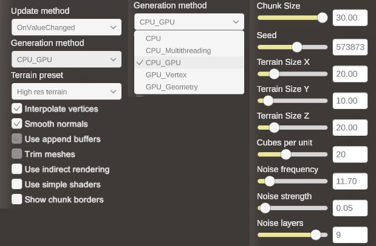
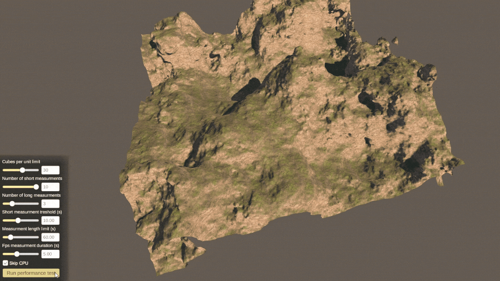

Master's thesisPerformance comparison of 3D terrain generation using the Marching Cubes algorithm between CPU and GPU
My master's thesis is titled Performance comparison of 3D terrain generation using the Marching Cubes algorithm between CPU and GPU. As part of the thesis, I created a Unity project to test the performance of various terrain generation techniques available in the engine.
The project explores compute and graphics shader capabilities and different mesh rendering techniques in depth, while providing an accessible user interface and automated data collection.
Features I am most proud of
Complex Terrain Generation
- Implemented a multi-step terrain generation algorithm using Marching Cubes and voxel density fields.
- Developed a custom shading approach using triplanar texture projection.
- Built a real-time control panel for adjusting terrain parameters and generation methods.

Exploring Different Approaches
- Implemented multiple terrain generation approaches, including CPU-only processing, multithreading, combined CPU and GPU processing, and approaches running almost entirely on the GPU.
- Created builds using DirectX, OpenGL, and Vulkan to compare performance across graphics APIs.
- Explored rendering engine features such as indirect rendering, alongside different shading and optimization techniques.
- Added parameters to control terrain size, quality, and other properties, allowing me to examine how each affects the final result.

Extensive Performance Testing
- Implemented a performance testing tool that automatically runs hundreds of terrain generation passes with different parameters.
- Exported test results to an Excel spreadsheet, ready for analysis and inclusion in my master's thesis.
